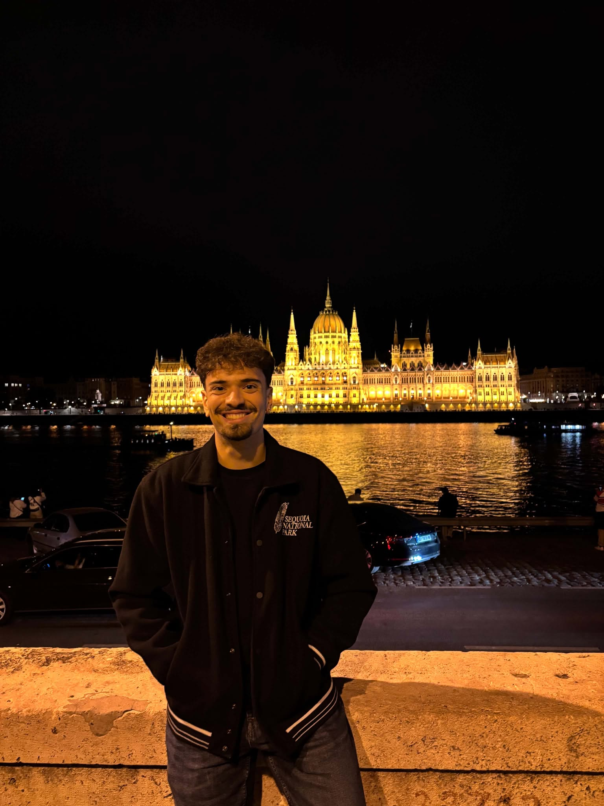

I am an undergraduate student in Electrical and Computer Engineering at Aristotle University of Thessaloniki. My research interests include deep learning, representation learning, efficient neural networks, and trustworthy artificial intelligence.
Previously, I worked on various research projects involving machine learning, optimization, and signal processing. I am particularly interested in understanding how neural networks learn representations and how modern AI systems can become more efficient, reliable, and interpretable.
Outside of research, I enjoy weightlifting, basketball and cooking.
